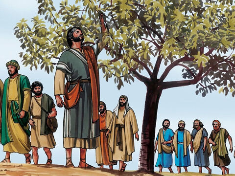

Lord Jesus Curses The Fig Tree
Now in the morning as he returned into the city, he hungered.
And when he saw a fig tree in the way, he came to it, and found nothing thereon, but leaves only, and said unto it, Let no fruit grow on thee henceforward for ever. And presently the fig tree withered away.
And when the disciples saw it, they marvelled, saying, How soon is the fig tree withered away!
Jesus answered and said unto them, Verily I say unto you, If ye have faith, and doubt not, ye shall not only do this which is done to the fig tree, but also if ye shall say unto this mountain, Be thou removed, and be thou cast into the sea; it shall be done.
And all things, whatsoever ye shall ask in prayer, believing, ye shall receive.
Matthew 21:18-22
- 